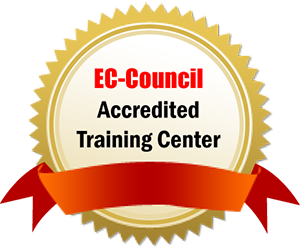
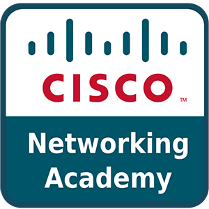
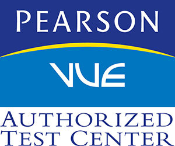

Kontaktrirajte nas
O nama
Naše vrijednosti
Obećajemo pomoć u pronalasku onoga što voliš raditi i da ćemo te poticati na izvrsnost - kvalitetom programa i procesa, strastvenim predavačima, globalno aplikabilnim znanjem te poticanjem kvalitete života.
Postoje vrijednosti u koje vjerujemo od prvog dana, koje dijele naši predavači, ali i naši polaznici, bez obzira imaju li oni 7 ili 77 godina. Pomno smo odabrali atribute koji su odraz tih naših vrijednosti i koji su ključni u kreiranju jasne i jedinstvene slike o našem brandu.
specijalizirano i kvalitetno
Svi naši nastavni programi i procesi baziraju se na globalnim standardima i najrelevantnijim znanjima potrebnim za uspjeh na tržištu rada. Spajamo snažnu teorijsku podlogu s praktičnim znanjima kako bismo pomogli našim polaznicima da pronađu ono što vole raditi. Koliko smo uspješni u tome najbolje pokazuje činjenica da 100% naših studenata pronalazi posao unutar 6 mjeseci od diplome, dok čak 85% polaznika programa cjeloživotnog obrazovanja promijeni posao ili napreduje u roku 3 mjeseca nakon završetka programa.
Izbalansirano
Obrazovanje za nas podrazumijeva akademsku, ali i društvenu komponentu čovjeka. Snažno vjerujemo da je čovjek spreman na napredak tek kada pronađe ravnotežu u životu. Stoga kreiramo okruženje koje će u jednakoj mjeri poticati kvalitetu obrazovanja i ispunjen i kvalitetan život. Ulaganje u obrazovanje uvijek znači ulaganje u sebe. Vjerujemo da upravo upisom studija ili programa obrazovanja postižemo balans između svakodnevnih obveza i kvalitetnog vremena koje odvajamo za sebe.
Izvrsno
Izvrsnost je ključna emocionalna diferencijacija našeg branda - pomažemo našim polaznicima i studentima da pronađu ono što vole raditi i postanu izvrsni u tome. Našu izvrsnost dokazuju brojna priznanja i certifikati za kvalitetu naših nastavnih programa i procesa, ali i vrhunski strastveni predavači koji prenose tu iskru na sve studente i polaznike koji dođu u Algebru. Na putu do pronalaska onog što volimo postoji onaj trenutak kad shvatimo da mi to možemo i mi to želimo raditi, mi taj moment nazivamo iskra, zato želimo da svi koji su dio Algebre postanu izvrsni u onom što vole raditi odnosno da zaiskre u Algebri.
Povijest
Zajedno gradimo povijest Algebre. Počeli smo prije gotovo dvadeset godina i s tobom nastavljamo put prema novim uspjesima.
Otvorili smo Algebra LAB, jedinstveni inovacijski centar koji pomaže tvrtkama, javnim službama i start-up projektima razviti inovativna poslovna rješenja koja će potaknuti konkurentnost gospodarstva. Investicijom od čak tri milijuna kuna, jedini u Hrvatskoj smo objedinili tri ključna elementa – odjel primijenjenog istraživanja i razvoja u digitalnom području, start-up inkubator s coworking prostorom te inovativnu edukacijsku platformu namijenjenu širenju najnaprednijih tehnoloških i poslovnih znanja. Algebra LAB novo je mjesto je za inovacije, kreacije, ideje i snove o budućnosti.
1998. - osnovan algebra d.o.o. - poduzeće za obrazovanje odraslih
Algebra d.o.o. osnovana je u travnju 1998. godine kao poduzeće za obrazovanje odraslih. U lipnju 1998. bilježi prve polaznike seminara primjene računala i računalnih aplikacija. U rujnu 1998. bilježi prvi znatniji porast broja korisnika usluga, da bi se kroz višeznamenkasti rast u godinama 1999. i 2000. etablirala na tržištu edukacije odraslih, na području korisničke primjene informacijskih tehnologija (IT).
2000. Microsoft authorized training center (ATC)
Nakon dosta napora i truda uvjerili smo 2000 godine lokalni ured Microsoft Hrvatska da zadovoljavamo postavljene uvjete kako bismo mogli postati autorizirani obrazovni centar za njihove tehnologije. Ova, prva u nizu, autorizacija distancirala nas je do drugih obrazovnih ponuđača iz tog vremena te nam je osigurala dostup službenim nastavnim materijalima i povoljnije uvjete licenciranja softvera. Ovaj smo status naknadno značajno unaprijedili kako bismo dosegli „Gold“ epitet.
2001. - Adobe, Macromedia i autodesk training center
Potaknuti uspjehom dobivanja Microsoft akreditacije, u 2001 godini smo svu snagu uložili upravo na zadovoljavanje uvjeta za uspostavu službenog trening centra i za druge proizvođače te smo iste godine postali: Macromedia Authorized Training Center Adobe Authorized Training Provider Autodesk Authorized Training Center i IBM Business Partner.
2002. - Osnovano učilište Algebra
Početkom 2002. godine Algebra d.o.o. osniva Učilište Algebra, a iste godine seli se u znatno veći i kvalitetniji prostor u Maksimirsku 58a, Zagreb gdje se polazincima na raspolaganje stavlja ukupno 6 učionica i oko 800 m2 uređenog obrazovnog prostora. Prema procjenama Microsoft Hrvatska udio Algebre na hrvatskom tržištu edukacijskih usluga za Microsoft alate narastao je u toj godini na 30%-35%.
2003. - Učilište Algebra postajo vodeći ponuđač obrazovanja u IT-u
Uvođenjem niza novih programa obrazovanja odraslih u akreditiranih kod Ministarstva zaduženog za obrazovanje kroz nekoliko prethodnih godina, Algebra je u 2003 u samo godinu dana sa 5. skočila na 1. mjesto ponuđača informatičke edukacije (mjereno prema ostvarenom prihodu i broju polaznika), ostvarivši rast u jednoj godini poslovanja od 91,8%. Poziciju vodećeg obrazovnog sustava u obrazovanju odraslih držimo još i danas.
2007. - Visoko učilište Algebra dovbiva akreditaciju
Nakon više od 2 godine intenzivnih priprema, krajem 2007. je osnovana Visoka škola za primijenjeno računarstvo koja je dopusnicu Ministarstva znanosti, obrazovanja i sporta dobila u lipnju 2008. godine. Ovaj događaj postavio je nove smjernice razvoja Algebra obrazovne grupe te je na određeni način uspješno zaokružio nastojanja za pokretanjem visokoškolskog obrazovnog program koja su inicirana još u 2002. godini kroz provedbu IBM ACE obrazovnog programa. Provedba nastavnog programa započinje u prostorijama FER-a te u zgradi Algebre u Maksimirskoj ulici.
2013. - Izvrsni rezultati na europskim projektima, kvaliteta i dalje u fokusu
Dodatno smo proširili svoje kapacitete dodavanjem novih učionica na adresi u Ilici, a uspješno smo prošli i provjeru kvalitete provedbe programa u organizaciji FER-a i do 2016. produžili certifikat „Odobreno od FER-a“. Čitava Algebra grupa je ocijenjena kao vodeći ECDL centar u Hrvatskoj, a istaknuti smo i kao primjer u provedbi EU projekata što je okrunio i posjet povjerenika EU g. Andora. Visoko učilište Algebra od ove godine ima novi logotip i vizualni identitet.
2015. - Studij digitalnog marketinga - ponovno pomičemo granice
Dodatno smo proširili svoje kapacitete dodavanjem novih učionica na adresi u Ilici, a uspješno smo prošli i provjeru kvalitete provedbe programa u organizaciji FER-a i do 2016. produžili certifikat „Odobreno od FER-a“. Čitava Algebra grupa je ocijenjena kao vodeći ECDL centar u Hrvatskoj, a istaknuti smo i kao primjer u provedbi EU projekata što je okrunio i posjet povjerenika EU g. Andora. Visoko učilište Algebra od ove godine ima novi logotip i vizualni identitet.
2016. - Pokrećema mba e-leadership studij - doing business in digital economz
Dodatno smo proširili svoje kapacitete dodavanjem novih učionica na adresi u Ilici, a uspješno smo prošli i provjeru kvalitete provedbe programa u organizaciji FER-a i do 2016. produžili certifikat „Odobreno od FER-a“. Čitava Algebra grupa je ocijenjena kao vodeći ECDL centar u Hrvatskoj, a istaknuti smo i kao primjer u provedbi EU projekata što je okrunio i posjet povjerenika EU g. Andora. Visoko učilište Algebra od ove godine ima novi logotip i vizualni identitet.
Algebra Grupa
Algebra grupa je vodeći hrvatski i regionalni privatni obrazovni sustav prisutan u 30 gradova diljem Republike Hrvatske, s više od 120 stalno zaposlenih i više od 400 vanjskih suradnika.
Kroz proteklih gotovo 20 godina rada, Algebra je postala najznačajniji regionalni edukacijski partner tvrtki Microsoft, Cisco, Adobe, Autodesk, ECDL, VMware, EC-Council i drugih. U obrazovanju odraslih školujemo oko 18.000 polaznika seminara i programa obrazovanja godišnje, dok u visokom obrazovanju upisujemo svake godine više od 300 novih studenata. Kvalitetu poslovanja Algebre prepoznali su kako naši klijenti tako i svi značajniji proizvođači softvera, a dokazuje ga i implementirani ISO 9001:2000 certifikat koji smo uveli još 2004. godine.
EC-Council Accredited Training Center - kreditirani trening centar

E Cisco Networking Academy, Cisco akademija mrežnih tehnologija

VUE Ispitni centar za testiranje kandidata

Autodesk trening centar za AutoCAD, Inventor i 3D Studio alate
Adobe autorizirani trening partner za grafičke i web aplikacije
Microsoft Gold Certified Partner for Learning Solutions
Red Hat Akademija - podržava nastavu i certifikacijske ispite
Oracle Approved Education Center - provedba službene Oracle edukacije
Kako do nas?
Lokacija
Algebra se nalazi u okviru kampusa Hrvatskog katoličkog sveučilišta (HKS) u Zagrebu, na adresi Ilica 242. Ulaz u kampus smješten je u Domobranskoj ulici. Unutar kampusa, Algebra djeluje na dvije lokacije: u novoobnovljenoj zgradi s početka 20. stoljeća koja se prostire na više od 3500 četvornih metara, te na 2. katu suvremene nove poslovne zgrade koja se nalazi u neposrednoj blizini.
Kako do nas?
Algebra je smještena u zapadnom dijelu grada Zagreba, na sto metara udaljenosti od tramvajske stanice Sv. Duh i na15-ak km udaljenosti od zagrebačke zračne luke.
Javni prijevoz
Od glavnog trga, Trga bana Jelačića, udaljena je 6 tramvajskih stanica vožnje, linijama 6 i 11 u smjeru Črnomerca. Od Glavnog željezničkog kolodvora udaljena je 8 stanica vožnje tramvajskom linijom 6, također u smjeru Črnomerca
Osobno vozilo
O informacije o dolasku automobilom iz smjera Slavonska avenija dostupne su ovdje, iz smjera Zagrebačke avenije ovdje, a iz smjera Jadranske avenije ovdje
Parking
Unutar kampusa posjetiteljima je na raspolaganju otvoreni parking koji se naplaćuje 4 kune po satu, dok se izvan kampusa nalazi III. parkirna zona Zagrebparkinga.
Visoko sveučilište Algebra Bernays